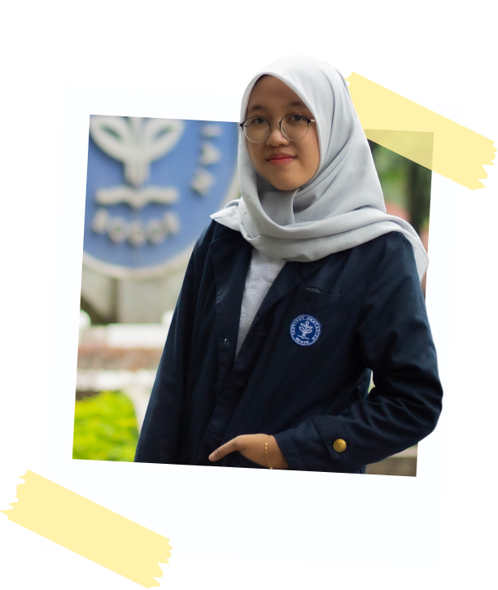

Halo, Aku
Lathiifa Zahira
Saat ini aku adalah seorang mahasiswa S1 jurusan
Ilmu Komputer di IPB University.
Lebih dalam 🔽

About Me
Aku lahir di Jakarta, 17 November 2004. Teman-teman akrab memanggilku Lathiifa atau Tifa! Sebagai orang yang easy going, aku dapat dengan
cepat beradaptasi dengan lingkungan baru. Salah satu kebiasaanku adalah scrolling media sosial, bukan hanya untuk hiburan, tetapi juga untuk
mengikuti perkembangan terbaru di dunia teknologi. Dari sana, aku sering menemukan inspirasi dan ide-ide baru. Sebagai mahasiswa yang ingin
menjadi software developer, aku percaya bahwa pekerjaan tersebut bukan hanya tentang menulis kode, tetapi juga tentang memahami
tren dan kebutuhan pengguna.
My Activity
Let's Connect!
Klik icon untuk saling mengenal lebih dalam, ditunggu ya!